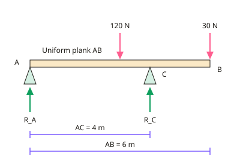

A-level Maths Year 13 · Topic 8
Mechanics
Mechanics at A2 level handles more realistic situations with moments, friction, projectiles and variable forces.
We will take moments for rods, ladders and tilting, and use friction on slopes and with connected particles.
Then we model projectiles and their trajectory, and use calculus with vectors for variable acceleration and variable forces.
- 7 subtopics
- 521 questions
- Free: 8.1 notes and 10 questions
In this topic
- 8.1Moments, friction and equilibriumFree below · 79 questions
- 8.2Projectiles and variable accelerationOpen in Full Marks · 63 questions
- 8.3Moments: non-uniform rods, ladders and tilting problemsOpen in Full Marks · 80 questions
- 8.4Friction on inclined planes and with connected particlesOpen in Full Marks · 77 questions
- 8.5Projectile trajectory equation and modelling assumptionsOpen in Full Marks · 81 questions
- 8.6Variable acceleration in vector form using calculusOpen in Full Marks · 68 questions
- 8.7Newton's second law with variable forcesOpen in Full Marks · 73 questions
8.1 · Free notes
Moments, friction and equilibrium

Key points
- Moment = force × perpendicular distance from the pivot. For equilibrium, resultant force and resultant moment are both zero.
- Problems with rods and beams often involve the weight acting at the centre of mass, plus reaction forces at supports.
- Friction opposes motion; the maximum (limiting) friction is F = μR, where μ is the coefficient of friction and R is the normal reaction.
- On an inclined plane, resolve the weight into components parallel (mg sinθ) and perpendicular (mg cosθ) to the slope.
- An object is on the point of sliding when the driving force equals the limiting friction.
In more detail
- Worked tilting plank: a uniform 6 m plank (200 N) rests on supports at end A and at B, 4 m from A, with 100 N at the far end → moments about A: 4R_B = 200 × 3 + 100 × 6 → R_B = 300 N, so R_A = 0 and the plank is about to tilt.
- Worked friction: a 10 kg box on rough ground with μ = 0.3 has limiting friction 0.3 × 98 = 29.4 N; pushed with 20 N, it stays still with friction 20 N.
- Worked slope: μ = 0.4 on a 30° slope: tan 30° = 0.577 > 0.4, so the block slides with a = 9.8(sin 30° − 0.4 cos 30°) = 1.51 m s⁻².
- Worked angle of friction: a block on the point of sliding at 25° has μ = tan 25° = 0.466.
Practice
Moments, friction and equilibrium: 10 questions
Pick an answer to check it, or open the answer for the explanation.
1. What is the moment of a 20 N force acting 0.3 m perpendicular from a pivot?
- 0.015 Nm
- 6 Nm
- 20 Nm
- 66.7 Nm
Show answer
B: 6 Nm. M = Fd = 20 × 0.3 = 6 Nm.
2. What is the maximum friction force equal to?
- μ ÷ R
- μR
- R ÷ μ
- μ + R
Show answer
B: μR. F ≤ μR, with equality at the point of sliding.
3. On a slope at angle θ, the component of weight parallel to the slope is:
- mg cosθ
- mg sinθ
- mg tanθ
- mg
Show answer
B: mg sinθ. This component tends to pull the object down the slope.
4. For a rigid body in equilibrium:
- Only forces must balance
- Only moments must balance
- Both resultant force and resultant moment are zero
- The body must be at rest
Show answer
C: Both resultant force and resultant moment are zero. Both conditions are needed.
5. Where does the weight of a uniform rod act?
- At one end
- At its midpoint
- At the pivot
- Nowhere
Show answer
B: At its midpoint. A uniform rod's centre of mass is at its midpoint.
6. A 4 kg block on a rough surface has μ = 0.25. What is the maximum friction? (g = 9.8)
- 1 N
- 9.8 N
- 39.2 N
- 0.25 N
Show answer
B: 9.8 N. F = μR = 0.25 × 39.2 = 9.8 N.
7. On a slope at 30°, what is the component of a 20 N weight perpendicular to the slope?
- 10 N
- 17.3 N
- 20 N
- 11.5 N
Show answer
B: 17.3 N. 20 cos30° ≈ 17.3 N.
8. A uniform beam is supported at both ends. Where does its weight act?
- At the left support
- At its midpoint
- At the right support
- Nowhere
Show answer
B: At its midpoint. A uniform beam's centre of mass is at its midpoint.
9. A uniform 4 m beam of mass 10 kg rests on supports at each end. A 20 kg load sits 1 m from A. What is the reaction at B? (g = 9.8)
- 98 N
- 196 N
- 147 N
- 49 N
Show answer
A: 98 N. Moments about A: 4R_B = 10×9.8×2 + 20×9.8×1 = 392, so R_B = 98 N. The beam's weight acts at its centre, 2 m from A.
10. A block rests on a rough slope, and tanθ = μ when it is on the point of sliding. If μ = 0.5, what is the angle of the slope?
- 45.0°
- 63.4°
- 30.0°
- 26.6°
Show answer
D: 26.6°. Limiting equilibrium gives mg sinθ = μmg cosθ, so tanθ = μ = 0.5 and θ = 26.6°. Using sinθ = 0.5 wrongly gives 30°.
Keep going in Full Marks
Full Marks has 79 questions on Moments, friction and equilibrium (69 more than here), set out in practice levels. You also get notes and 3D models for all 7 subtopics of Mechanics, plus games, timed exams and past papers.
On your exam board
- AQATopic 13: Moments, Topic 14: Projectiles, Topic 15: Friction and further forces, Topic 16: Further kinematics
- OCR ATopic 13: Moments, Topic 14: Projectiles, Topic 15: Friction and further forces, Topic 16: Further kinematics
- OCR BTopic 13: Moments, Topic 14: Projectiles, Topic 15: Friction and further forces, Topic 16: Further kinematics
- EdexcelTopic 13: Moments, Topic 14: Projectiles, Topic 15: Friction and further forces, Topic 16: Further kinematics
Not in the Cambridge specification.